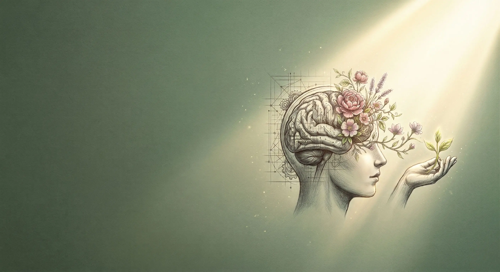
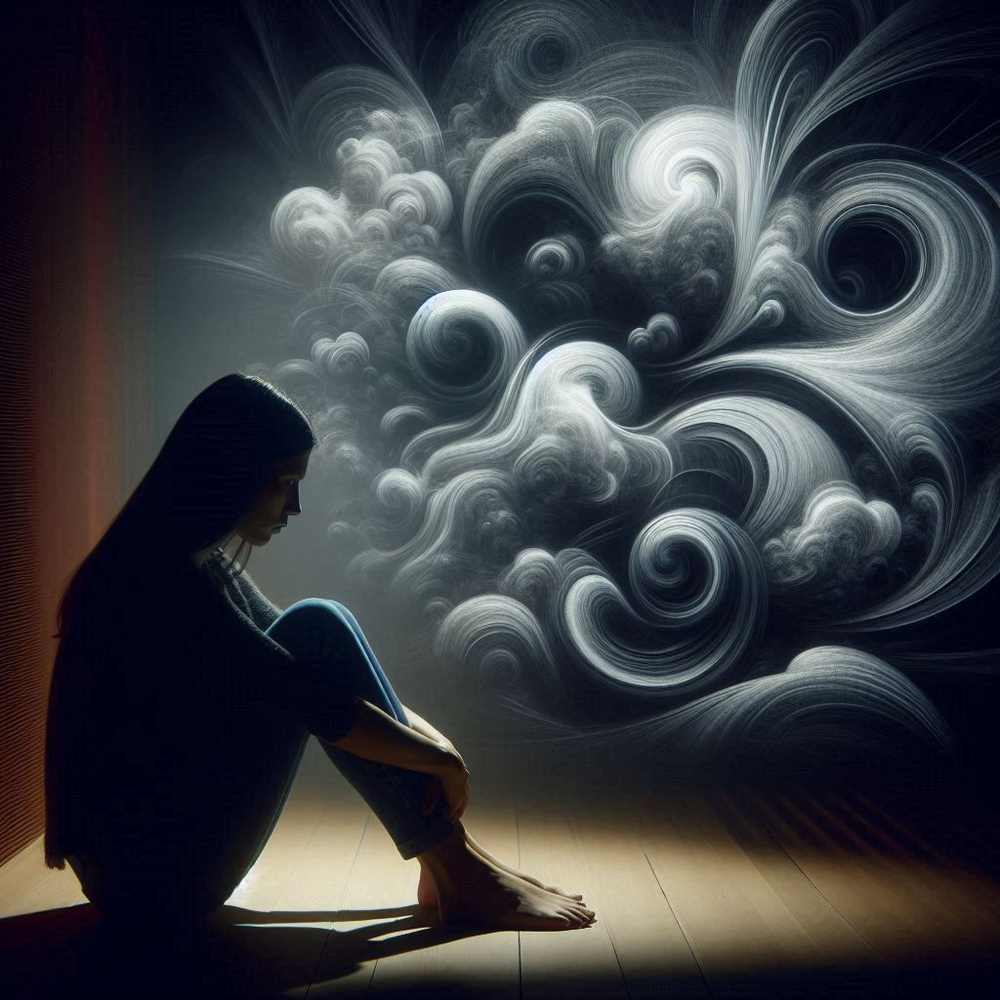
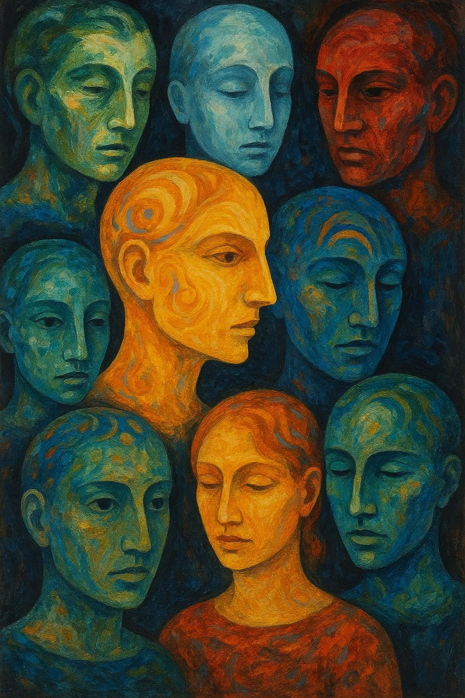
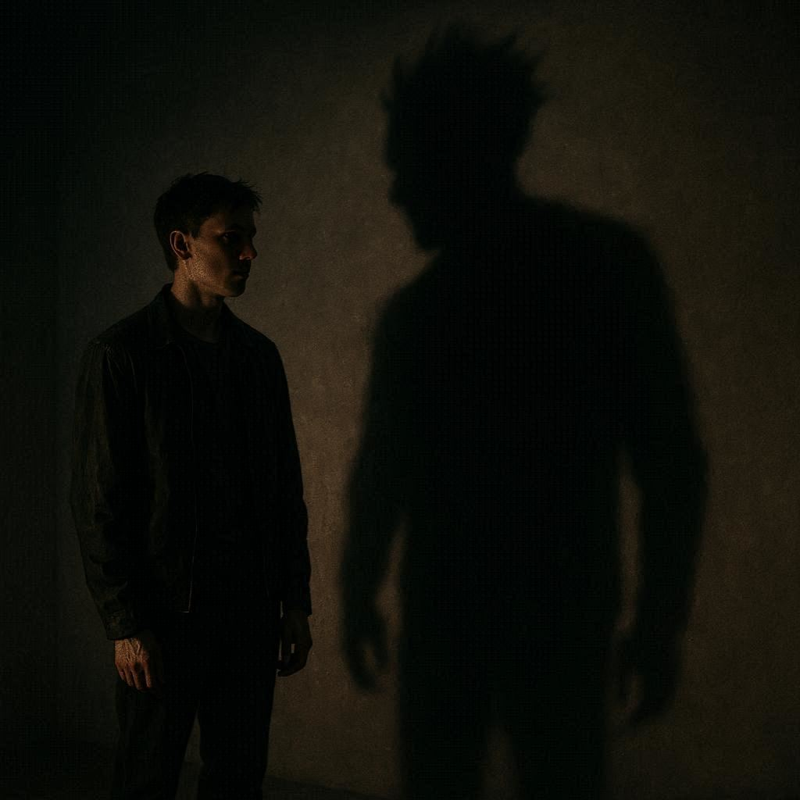
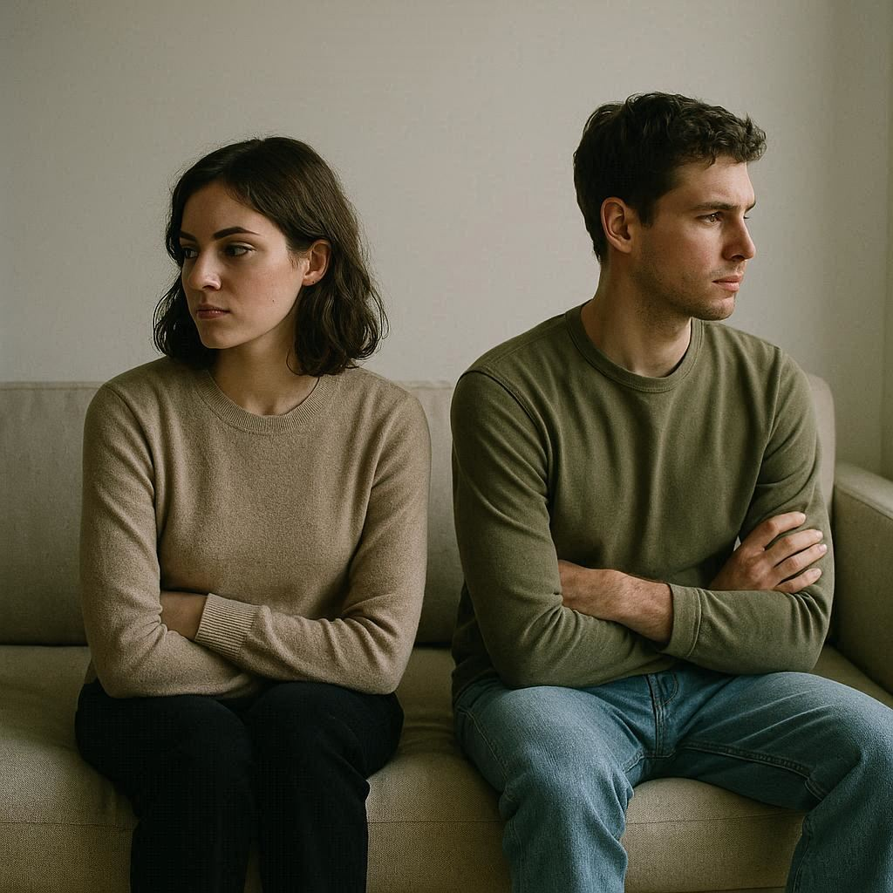
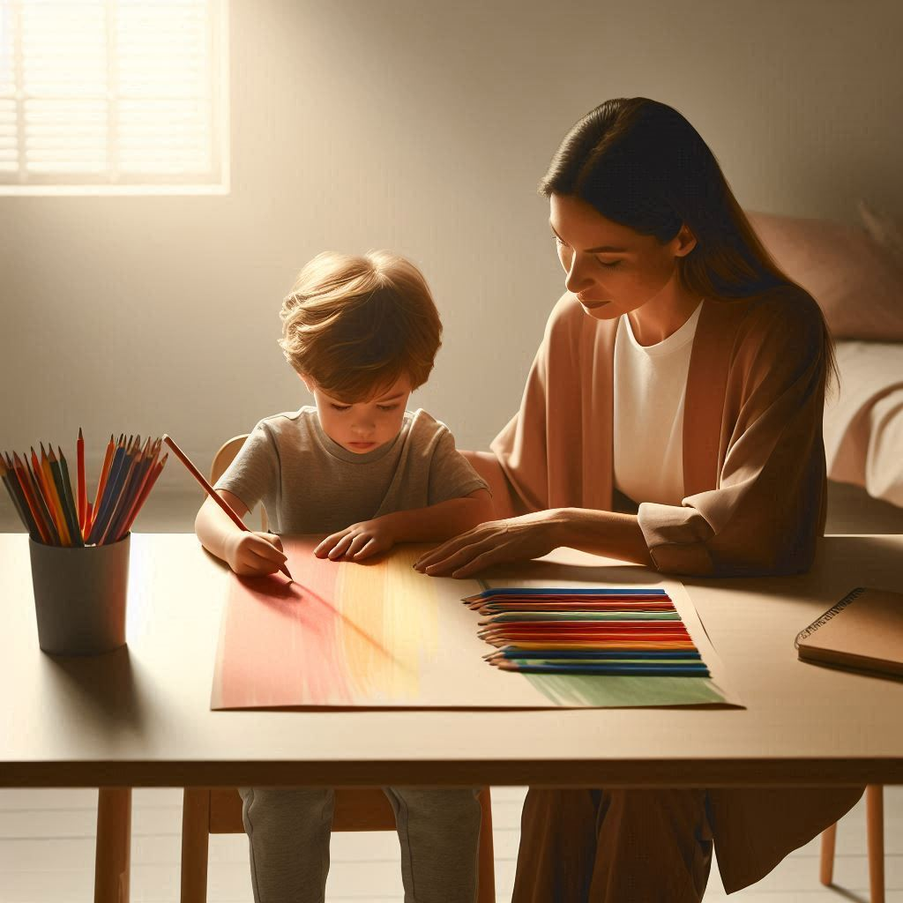
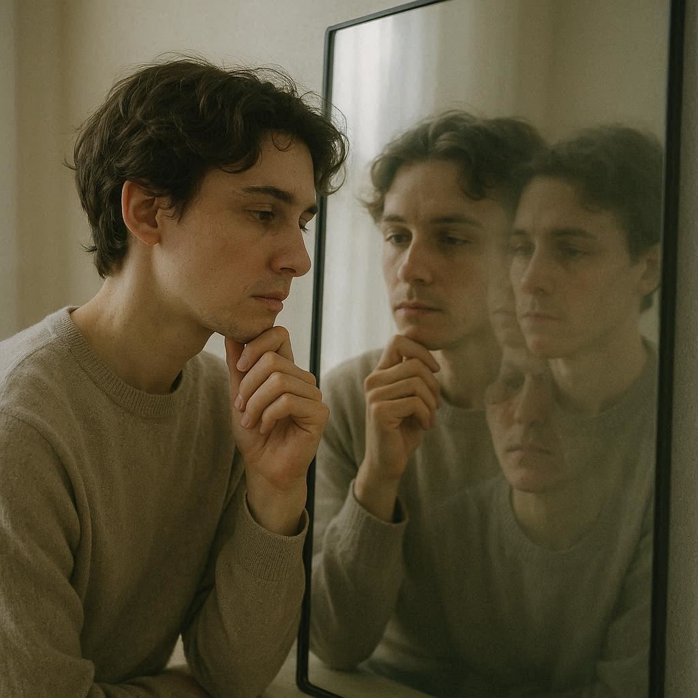
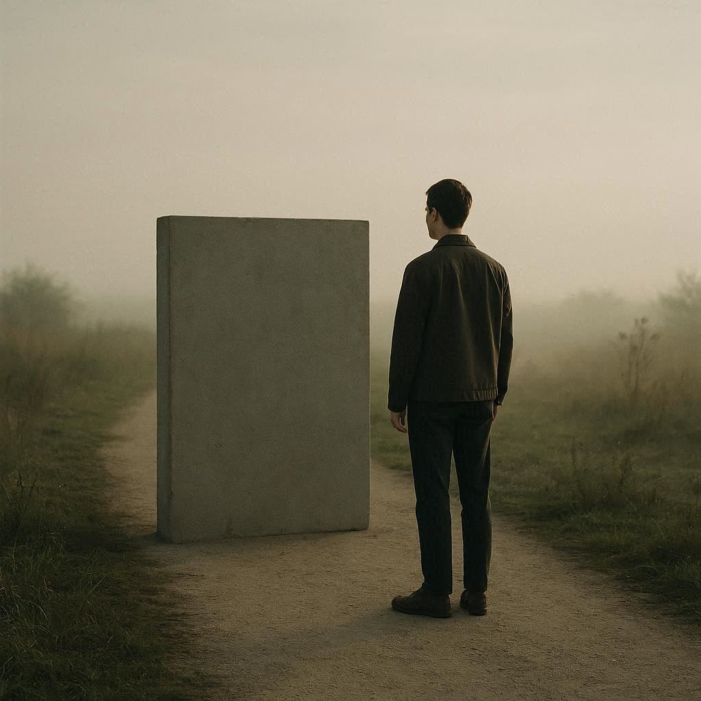

Prostor za promenu · Beograd & Online
A space for change · Belgrade & Online
Пространство для изменений · Белград & Онлайн

Oblast 01
Area 01
Область 01
"Anksioznost nije neprijatelj — ona je signal."
"Anxiety is not an enemy — it is a signal."
"Тревога — не враг, а сигнал."
Anksioznost je jedan od najčešćih razloga zbog kojih ljudi dolaze na psihoterapiju. Najčešće se javlja kroz stalnu brigu, unutrašnji nemir i napetost, a može se ispoljiti i kao generalizovana anksioznost, socijalna anksioznost, panični napadi, opsesivno-kompulzivni poremećaj ili različite fobije. Kroz Geštalt terapiju radimo na tome da razumemo šta anksioznost pokušava da poruči, a ne samo da ublažimo simptome.
Anxiety is one of the most common reasons people seek psychotherapy. It often appears as persistent worry, inner tension, and restlessness, but can also take the form of generalized anxiety, social anxiety, panic attacks, OCD, or specific phobias. Through Gestalt therapy, the focus is on understanding what anxiety is trying to communicate, not just reducing symptoms.
Тревога — одна из самых распространённых причин обращения к психотерапии. Она часто проявляется как постоянное беспокойство, внутреннее напряжение и ощущение тревожности, а также может выражаться в форме генерализованной тревоги, социальной тревожности, панических атак, ОКР или различных фобий. В гештальт-терапии мы фокусируемся на понимании того, что тревога пытается сообщить, а не только на снижении симптомов.
Oblast 02
Area 02
Область 02
"Trauma nije sudbina — ona je iskustvo koje se može integrisati."
"Trauma is not destiny — it is an experience that can be integrated."
"Травма — это не судьба, это опыт, который можно интегрировать."
PTSP (posttraumatski stresni poremećaj) nastaje kao odgovor na izuzetno teška i preplavljujuća iskustva — poput rata, saobraćajnih nesreća, seksualnog nasilja, gubitka bliskih osoba ili dugotrajnog emocionalnog zlostavljanja. Najčešći simptomi PTSP-a uključuju ponovna proživljavanja (flashbackove), noćne more, emocionalno utrnuće i stalnu napetost ili hipervigilnost. Geštalt terapija pruža siguran prostor za postepen i pažljiv rad sa traumom.
PTSD (post-traumatic stress disorder) develops as a response to overwhelming and highly distressing experiences — such as war, accidents, sexual violence, loss of loved ones, or prolonged emotional abuse. Common PTSD symptoms include flashbacks, nightmares, emotional numbness, and constant tension or hypervigilance. Gestalt therapy provides a safe space for gradual and careful work with trauma.
ПТСР (посттравматическое стрессовое расстройство) возникает как реакция на крайне тяжёлые и перегружающие переживания — такие как война, аварии, сексуальное насилие, потеря близких или длительное эмоциональное насилие. К основным симптомам ПТСР относятся флэшбэки, ночные кошмары, эмоциональное онемение и постоянное напряжение или гипербдительность. Гештальт-терапия создаёт безопасное пространство для постепенной и бережной работы с травмой.
Vaš tempo
Your pace
Ваш темп
Rad se odvija postepeno — bez forsiranja suočavanja sa traumom pre nego što za to postoji unutrašnja spremnost.
The process unfolds gradually — without forcing confrontation with trauma before you are internally ready.
Работа проходит постепенно — без форсирования столкновения с травмой до внутренней готовности.
Telo kao saveznik
Body as ally
Тело как союзник
Posebna pažnja posvećuje se telesnim senzacijama i regulaciji nervnog sistema, kroz pristupe kao što je somatic experiencing.
Special attention is given to bodily sensations and nervous system regulation, through approaches such as somatic experiencing.
Особое внимание уделяется телесным ощущениям и регуляции нервной системы с использованием подходов, таких как somatic experiencing.

Oblast 03
Area 03
Область 03
"Iza svakog obrasca ponašanja stoji pokušaj preživljavanja."
"Behind every behavioral pattern lies an attempt to survive."
"За каждым паттерном поведения стоит попытка выжить."
Poremećaji ličnosti predstavljaju dugotrajne obrasce mišljenja, osećanja i ponašanja koji odstupaju od uobičajenih normi i često uzrokuju unutrašnju patnju ili probleme u odnosima. U psihoterapiji se ovi obrasci ne posmatraju kao "greška", već kao način na koji se osoba nekada prilagodila i zaštitila. Geštalt terapija pomaže da se ti obrasci razumeju i postepeno menjaju — bez etiketiranja i stigmatizacije.
Personality disorders involve long-term patterns of thinking, feeling, and behavior that differ from common norms and often create distress or relational difficulties. In psychotherapy, these patterns are not seen as flaws, but as ways a person once adapted and protected themselves. Gestalt therapy focuses on understanding and gradually transforming these patterns without labeling or stigma.
Расстройства личности — это устойчивые паттерны мышления, чувств и поведения, которые отличаются от привычных норм и часто вызывают внутренние страдания или трудности в отношениях. В психотерапии эти паттерны рассматриваются не как «ошибка», а как способ адаптации и защиты. Гештальт-терапия помогает понять и постепенно изменить эти паттерны без стигматизации и ярлыков.
Zakažite sesijuBook a sessionЗаписатьсяOblast 04
Area 04
Область 04
"Zavisnost nije slabost — ona je pokušaj da se izborite sa nečim što je preteško."
"Addiction is not weakness — it is an attempt to cope with something overwhelming."
"Зависимость — не слабость, а попытка справиться с чем-то слишком тяжёлым."
Bolesti zavisnosti obuhvataju obrasce ponašanja koji postepeno preuzimaju kontrolu nad svakodnevnim životom. Mogu uključivati zavisnost od alkohola, psihoaktivnih supstanci, ali i ponašajne zavisnosti poput kockanja, interneta ili odnosa. U osnovi zavisnosti često stoje pokušaji da se ublaži stres, unutrašnja praznina ili emocionalna bol.
Addiction disorders involve patterns of behavior that gradually take control over everyday life. They may include substance addiction (alcohol, drugs) as well as behavioral addictions such as gambling, internet use, or relationships. At their core, addictions are often attempts to cope with stress, inner emptiness, or emotional pain.
Зависимости — это модели поведения, которые постепенно начинают контролировать повседневную жизнь. Это могут быть зависимости от веществ (алкоголь, наркотики), а также поведенческие зависимости — азартные игры, интернет или отношения. В основе зависимости часто лежит попытка справиться со стрессом, внутренней пустотой или эмоциональной болью.
"Iza svake zavisnosti stoji potreba koja nije prepoznata."
"Behind every addiction there is a need that has not been recognized."
"За каждой зависимостью стоит потребность, которая не была распознана."
Zakažite sesijuBook a sessionЗаписатьсяOblast 05
Area 05
Область 05
"Telo često govori ono što ne možemo da izgovorimo."
"The body often speaks what we cannot put into words."
"Тело часто говорит то, что мы не можем выразить словами."
Psihosomatski poremećaji predstavljaju stanja u kojima se psihički stres i emocionalni konflikti ispoljavaju kroz telesne simptome. To mogu biti hronični bolovi, problemi sa disanjem, varenjem, glavobolje ili osećaj stalne napetosti u telu. Iako medicinski nalazi često ne pokazuju jasan uzrok, simptomi su stvarni i zahtevaju razumevanje.
Psychosomatic disorders are conditions in which psychological stress and emotional conflicts are expressed through physical symptoms. These may include chronic pain, breathing or digestive issues, headaches, or constant body tension. Even when medical findings show no clear cause, the symptoms are real and require understanding.
Психосоматические расстройства — это состояния, при которых психологический стресс и эмоциональные конфликты проявляются через телесные симптомы. Это могут быть хронические боли, проблемы с дыханием или пищеварением, головные боли или постоянное напряжение в теле. Даже если медицинские обследования не выявляют причины, симптомы остаются реальными и требуют внимания.
Zakažite sesijuBook a sessionЗаписатьсяOblast 06
Area 06
Область 06
"Depresija nije slabost karaktera — ona je signal da nešto u vašem životu traži promenu."
"Depression is not a character weakness — it is a signal that something in your life needs to change."
"Депрессия — не слабость характера, это сигнал о том, что в жизни необходимы изменения."
Poremećaji raspoloženja uključuju depresiju, bipolarni poremećaj, distimiju i sezonske afektivne poremećaje. Najčešće se ispoljavaju kroz gubitak energije, pad motivacije, osećaj praznine, promene u spavanju i povlačenje iz svakodnevnih aktivnosti. Psihoterapija pomaže da se razumeju uzroci ovih stanja i postepeno vrati stabilnost i unutrašnja ravnoteža, često uz podršku psihijatra kada je to potrebno.
Mood disorders include depression, bipolar disorder, dysthymia, and seasonal affective disorders. They often manifest through low energy, lack of motivation, feelings of emptiness, changes in sleep, and withdrawal from daily life. Psychotherapy helps understand the underlying causes and gradually restore emotional stability, often combined with psychiatric support when needed.
Расстройства настроения включают депрессию, биполярное расстройство, дистимию и сезонные аффективные расстройства. Они часто проявляются снижением энергии, потерей мотивации, чувством пустоты, нарушениями сна и уходом от повседневной жизни. Психотерапия помогает понять причины этих состояний и постепенно восстановить эмоциональное равновесие, при необходимости в сочетании с психиатрической поддержкой.

Oblast 07
Area 07
Область 07
"Samopouzdanje se ne gradi — ono se oslobađa."
"Self-confidence is not built — it is freed."
"Уверенность в себе не строится — она освобождается."
Nisko samopouzdanje i negativna slika o sebi često stoje u osnovi mnogih psiholoških teškoća. Mogu se ispoljiti kroz sumnju u sebe, strah od greške, poređenje sa drugima i osećaj da „nismo dovoljno dobri". Psihoterapija pomaže da prepoznamo i oslobodimo se tuđih glasova koji su vremenom postali naš unutrašnji kritičar.
Low self-confidence and a negative self-image often lie at the core of many psychological difficulties. They may appear as self-doubt, fear of making mistakes, constant comparison with others, and a feeling of "not being good enough." Psychotherapy helps recognize and release internalized voices that have become our inner critic.
Низкая самооценка и негативный образ себя часто лежат в основе многих психологических трудностей. Это может проявляться в сомнениях в себе, страхе ошибок, постоянном сравнении с другими и ощущении «я недостаточно хорош». Психотерапия помогает распознать и освободиться от чужих голосов, ставших внутренним критиком.
"Autentičan život počinje kada prestanemo da živimo prema tuđim očekivanjima."
"An authentic life begins when we stop living according to others' expectations."
"Аутентичная жизнь начинается, когда мы перестаём жить по чужим ожиданиям."
Zakažite sesijuBook a sessionЗаписатьсяOblast 08
Area 08
Область 08
"Kvalitet naših odnosa u velikoj meri oblikuje kvalitet našeg života."
"The quality of our relationships largely shapes the quality of our life."
"Качество наших отношений во многом определяет качество нашей жизни."
Poteškoće u odnosima — partnerskim, porodičnim ili profesionalnim — jedan su od najčešćih razloga za dolazak na psihoterapiju. Često se ispoljavaju kroz nerazumevanje, konflikte, povlačenje ili osećaj udaljenosti. U radu istražujemo obrasce vezivanja, načine komunikacije i ponavljajuće konflikte koji utiču na kvalitet odnosa.
Difficulties in relationships — romantic, family, or professional — are among the most common reasons for seeking psychotherapy. They often appear as misunderstandings, conflicts, withdrawal, or emotional distance. The work focuses on exploring attachment patterns, communication styles, and recurring conflicts that shape relationships.
Трудности в отношениях — партнёрских, семейных или профессиональных — одна из самых частых причин обращения к психотерапии. Они проявляются в недопонимании, конфликтах, отдалении или эмоциональной дистанции. В работе исследуются паттерны привязанности, способы общения и повторяющиеся конфликты.
Partnerski odnosi
Romantic relationships
Партнёрские отношения
Konflikti, emocionalna distanca, gubitak bliskosti, problemi sa poverenjem i krize u vezi koje utiču na stabilnost odnosa.
Conflicts, emotional distance, loss of intimacy, trust issues, and relationship crises affecting stability.
Конфликты, эмоциональная дистанция, потеря близости, проблемы с доверием и кризисы в отношениях.
Porodični obrasci
Family patterns
Семейные паттерны
Porodični i transgeneracijski obrasci koji nesvesno utiču na način na koji gradimo odnose i komuniciramo sa drugima.
Family and transgenerational patterns that unconsciously shape how we build relationships and communicate.
Семейные и трансгенерационные паттерны, которые неосознанно влияют на наши отношения и коммуникацию.

Oblast 09
Area 09
Область 09
"Misli dolaze same — ali način na koji na njih reagujemo može da se promeni."
"Thoughts come on their own — but the way we respond to them can change."
"Мысли приходят сами — но наше отношение к ним можно изменить."
Opsesivno-kompulzivni poremećaj (OKP) karakterišu nametljive, ponavljajuće misli (opsesije) i radnje ili mentalni rituali (kompulzije) koji služe da smanje anksioznost. Iako donose kratkotrajno olakšanje, ovi obrasci dugoročno održavaju napetost i osećaj gubitka kontrole.
Obsessive-compulsive disorder (OCD) is characterized by intrusive, repetitive thoughts (obsessions) and behaviors or mental rituals (compulsions) aimed at reducing anxiety. While they provide short-term relief, these patterns maintain distress and a sense of loss of control over time.
Обсессивно-компульсивное расстройство (ОКР) характеризуется навязчивыми, повторяющимися мыслями (обсессиями) и действиями или ментальными ритуалами (компульсиями), направленными на снижение тревоги. Хотя они дают временное облегчение, эти паттерны поддерживают напряжение и ощущение потери контроля.
Opsesivne misli
Obsessive thoughts
Навязчивые мысли
Nametljive i često uznemirujuće misli koje se ponavljaju uprkos pokušajima da ih kontrolišemo ili potisnemo.
Intrusive and often distressing thoughts that persist despite attempts to control or suppress them.
Навязчивые, часто тревожные мысли, которые повторяются несмотря на попытки их контролировать.
Kompulzivni rituali
Compulsive rituals
Компульсивные ритуалы
Ponavljajuće radnje ili mentalni rituali koji privremeno smanjuju anksioznost, ali dugoročno održavaju problem.
Repetitive actions or mental rituals that temporarily reduce anxiety but reinforce the cycle.
Повторяющиеся действия или ментальные ритуалы, которые временно снижают тревогу, но поддерживают проблему.
Oblast 10
Area 10
Область 10
"Razumevanje počinje kada stvari dobiju jasnu sliku."
"Understanding begins when things become clear."
"Понимание начинается, когда появляется ясность."
Psihološko testiranje podrazumeva primenu standardizovanih i validiranih instrumenata za procenu ličnosti, inteligencije, kognitivnih sposobnosti i psiholoških teškoća. Cilj nije samo merenje, već dublje razumevanje funkcionisanja osobe i donošenje jasnih i pouzdanih zaključaka.
Psychological testing involves the use of standardized and validated tools to assess personality, intelligence, cognitive abilities, and psychological difficulties. The goal is not only measurement, but a deeper understanding of how a person functions and making clear, reliable conclusions.
Психологическое тестирование включает использование стандартизированных и валидированных методик для оценки личности, интеллекта, когнитивных способностей и психологических трудностей. Цель — не только измерение, но и более глубокое понимание функционирования человека и формирование точных выводов.
Psihološka dijagnostikaPsychological diagnosticsПсихологическая диагностикаOblast 11
Area 11
Область 11
"Bolest menja telo — ali ne mora da odredi način na koji živite."
"Illness changes the body — but it doesn't have to define how you live."
"Болезнь меняет тело — но не обязана определять вашу жизнь."
Život sa hroničnom bolešću donosi brojne psihološke izazove — od suočavanja sa dijagnozom, promena u svakodnevnom funkcionisanju, do osećaja gubitka kontrole ili identiteta. Psihološka podrška pomaže da se ovi procesi razumeju i pronađu načini da se živi kvalitetnije i stabilnije uprkos ograničenjima bolesti.
Living with a chronic illness brings various psychological challenges — from coping with diagnosis and changes in daily functioning to feelings of loss of control or identity. Psychological support helps understand these processes and find ways to live with more stability and quality despite limitations.
Жизнь с хроническим заболеванием сопровождается различными психологическими трудностями — от принятия диагноза и изменений в повседневной жизни до чувства потери контроля или идентичности. Психологическая поддержка помогает понять эти процессы и найти способы жить более устойчиво и качественно несмотря на ограничения.
Zakažite sesijuBook a sessionЗаписатьсяOblast 12
Area 12
Область 12
"Dete ne mora da razume problem da bi dobilo podršku koja mu je potrebna."
"A child doesn't need to understand the problem to receive the support they need."
"Ребёнку не нужно полностью понимать проблему, чтобы получить необходимую поддержку."
Psihoterapija sa decom i adolescentima zahteva poseban pristup prilagođen uzrastu i razvoju. Kroz igru, crtanje, razgovor i telesnu svesnost, dete dobija prostor da izrazi emocije, razvije sigurnost i nauči zdravije načine suočavanja sa izazovima.
Psychotherapy with children and adolescents requires an approach adapted to their age and development. Through play, drawing, conversation, and body awareness, the child gains space to express emotions, build a sense of safety, and develop healthier ways of coping.
Психотерапия с детьми и подростками требует подхода, адаптированного к возрасту и развитию. Через игру, рисование, разговор и телесную осознанность ребёнок получает пространство для выражения эмоций, формирования безопасности и развития здоровых способов справляться с трудностями.


Oblast 13
Area 13
Область 13
"Kada se granica između unutrašnjeg i spoljašnjeg sveta zamagli, potrebna je stabilna podrška."
"When the boundary between inner and outer reality blurs, stable support becomes essential."
"Когда граница между внутренним и внешним миром размывается, необходима стабильная поддержка."
Psihotična stanja uključuju promene u percepciji realnosti, kao što su halucinacije, deluzije i dezorganizovano mišljenje. Ova iskustva mogu biti intenzivna i zbunjujuća, kako za osobu koja ih doživljava, tako i za njenu okolinu. Psihoterapija pruža stabilan i strukturisan okvir za razumevanje i postepenu stabilizaciju, najčešće u saradnji sa psihijatrijskim tretmanom.
Psychotic states involve changes in the perception of reality, such as hallucinations, delusions, and disorganized thinking. These experiences can be intense and confusing both for the individual and their environment. Psychotherapy provides a stable and structured framework for understanding and gradual stabilization, often in collaboration with psychiatric treatment.
Психотические состояния включают изменения восприятия реальности — галлюцинации, бредовые идеи и дезорганизованное мышление. Эти переживания могут быть интенсивными и дезориентирующими. Психотерапия создаёт стабильную и структурированную среду для понимания и постепенной стабилизации, часто в сочетании с психиатрическим лечением.
"Stabilnost se ne vraća odjednom — ona se gradi korak po korak."
"Stability is not restored all at once — it is built step by step."
"Стабильность не возвращается сразу — она строится шаг за шагом."
Zakažite sesijuBook a sessionЗаписатьсяOblast 14
Area 14
Область 14
"Svaka blokada ima svoju logiku — i nešto što pokušava da zaštiti."
"Every blockage has its own logic — and something it is trying to protect."
"У каждого блока есть своя логика — и то, что он пытается защитить."
Blokade u ličnom razvoju često se ispoljavaju kroz prokrastinaciju, strah od uspeha ili neuspeha, teškoće u donošenju odluka i ponavljajuću samosabotažu. Iako deluju kao prepreke, ovi obrasci često imaju zaštitnu funkciju i ukazuju na dublje unutrašnje konflikte.
Growth blockages often appear as procrastination, fear of success or failure, difficulty making decisions, and recurring self-sabotage. Although they seem like obstacles, these patterns often serve a protective function and point to deeper internal conflicts.
Блоки в личностном развитии часто проявляются через прокрастинацию, страх успеха или неудачи, трудности в принятии решений и повторяющийся самосаботаж. Несмотря на внешние ограничения, эти паттерны часто выполняют защитную функцию и указывают на более глубокие внутренние конфликты.

Oblast 15
Area 15
Область 15
"I najteži osećaji mogu da se podele — i tada više nisu isti."
"Even the heaviest feelings can be shared — and then they begin to change."
"Даже самые тяжёлые чувства можно разделить — и тогда они начинают меняться."
Suicidne misli se često javljaju u trenucima intenzivne emocionalne patnje, osećaja bezizlaznosti ili gubitka smisla. Važno je znati da ove misli ne znače da želite da nestanete, već da nešto u vama traži olakšanje i promenu. Psihoterapija pruža siguran prostor u kojem možete govoriti otvoreno, bez osude, i postepeno pronaći stabilnost.
Suicidal thoughts often appear during periods of intense emotional distress, hopelessness, or loss of meaning. It is important to understand that these thoughts do not necessarily mean a desire to disappear, but rather a need for relief and change. Psychotherapy offers a safe, non-judgmental space to talk openly and gradually restore stability.
Суицидальные мысли часто возникают в периоды сильной эмоциональной боли, чувства безысходности или утраты смысла. Важно понимать, что эти мысли не обязательно означают желание исчезнуть, а указывают на потребность в облегчении и изменениях. Психотерапия создаёт безопасное пространство для открытого разговора и постепенной стабилизации.
Svaka od ovih oblasti je oblast u kojoj možemo raditi zajedno. Pišite mi — i napravimo plan.
Every one of these areas is one we can work on together. Write to me — and let's make a plan.
В каждой из этих областей мы можем работать вместе. Напишите мне — и составим план.
Zakažite razgovorSchedule a conversationЗаписаться